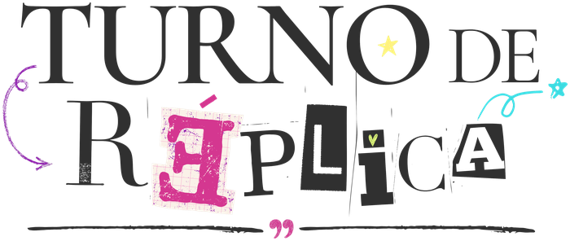

Orgullo y prejuicio, de Jane Austen
Una mirada fresca a la obra que siguen amando generaciones.

Revista Literaria • Comunidad • Historias
Un paseo por la historia de la literatura, sus grandes voces, objetos que cuentan historias y curiosidades que nos conectan con el pasado para entender el presente.
"Los libros son espejos: solo ves en ellos lo que ya llevas dentro."
— Carlos Ruiz ZafónDescubre la carta que Herman Melville envió a su editor y que marcó el destino de Moby Dick.
LEER MÁS →Una mirada fresca a la obra que siguen amando generaciones.
Mucho más que Narnia: su legado va mucho más allá.
Un objeto íntimo que la acompañó en sus últimos años.
La historia real detrás del mito de Bram Stoker.
Magia, soledad y realismo en su obra maestra.
Shakespeare inventó más de 1.700 palabras en inglés.
Jane Austen nunca publicó bajo su propio nombre.
El Quijote fue el primer best seller de la historia.
Mary Shelley escribió Frankenstein con 18 años.